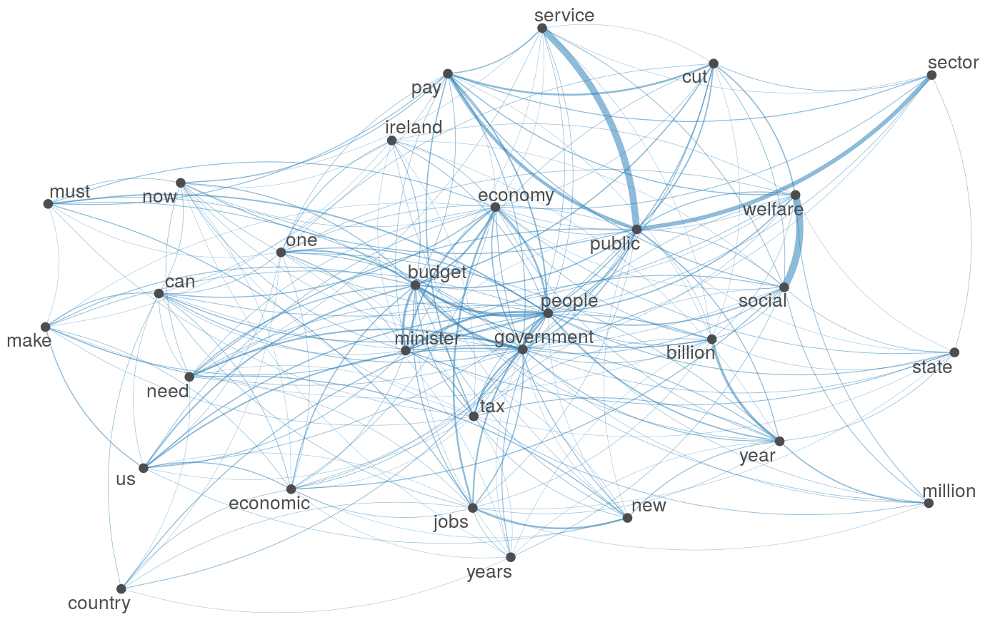
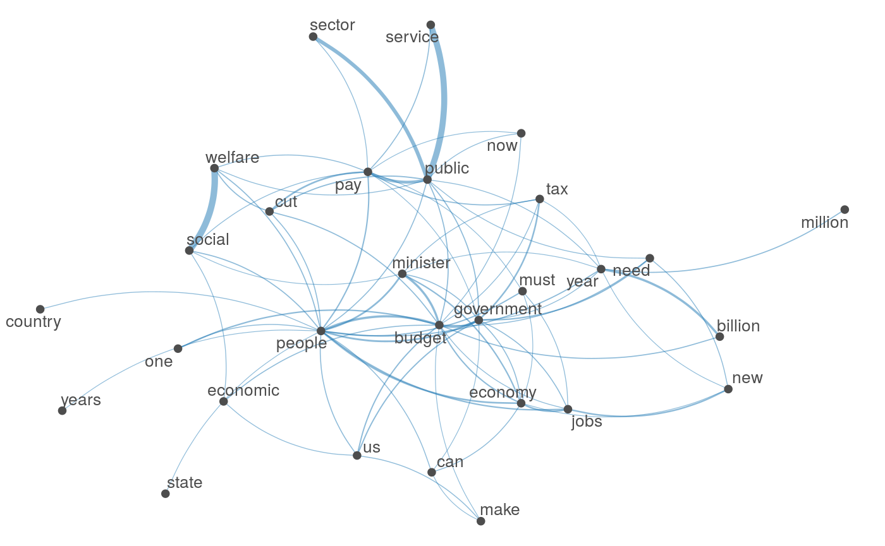
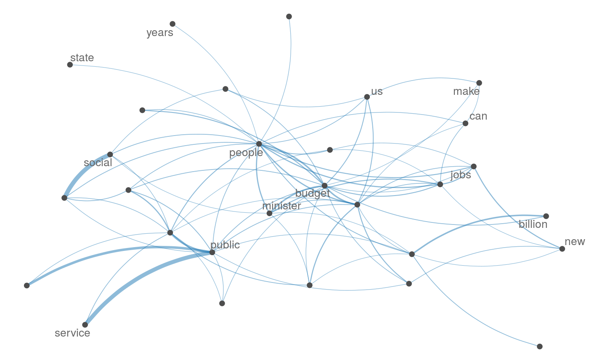

textplot_network.RdPlot an fcm object as a network, where edges show co-occurrences of features.
textplot_network(x, min_freq = 0.5, omit_isolated = TRUE, edge_color = "#1F78B4", edge_alpha = 0.5, edge_size = 2, vertex_color = "#4D4D4D", vertex_size = 2, vertex_labelcolor = NULL, vertex_labelfont = NULL, vertex_labelsize = 2, offset = NULL, ...) # S3 method for fcm as.network(x, min_freq = 0.5, omit_isolated = TRUE, ...) # S3 method for fcm as.igraph(x, min_freq = 0.5, omit_isolated = TRUE, ...)
| x | |
|---|---|
| min_freq | a frequency count threshold or proportion for co-occurrence frequencies of features to be included. |
| omit_isolated | if |
| edge_color | color of edges that connect vertices. |
| edge_alpha | opacity of edges ranging from 0 to 1.0. |
| edge_size | size of edges for most frequent co-occurrence The size of other edges are determined proportionally to the 99th percentile frequency instead of the maximum to reduce the impact of outliers. |
| vertex_color | color of vertices. |
| vertex_size | size of vertices |
| vertex_labelcolor | color of texts. Defaults to the same as
|
| vertex_labelfont | font-family of texts. Use default font if
|
| vertex_labelsize | size of vertex labels in mm. Defaults to size 2. |
| offset | if |
| ... | additional arguments passed to network or
graph_from_adjacency_matrix. Not used for |
Currently the size of the network is limited to 1000, because of the
computationally intensive nature of network formation for larger matrices.
When the fcm is large, users should select features using
fcm_select, set the threshold using min_freq, or implement
own plotting function using as.network.
set.seed(100) toks <- corpus_subset(data_corpus_irishbudget2010) %>% tokens(remove_punct = TRUE) %>% tokens_tolower() %>% tokens_remove(pattern = stopwords("english"), padding = FALSE) fcmat <- fcm(toks, context = "window", tri = FALSE) feat <- names(topfeatures(fcmat, 30)) fcm_select(fcmat, pattern = feat) %>% textplot_network(min_freq = 0.5)fcm_select(fcmat, pattern = feat) %>% textplot_network(min_freq = 0.8, vertex_labelcolor = rep(c('gray40', NA), 15))# as.igraph if (requireNamespace("igraph", quietly = TRUE)) { txt <- c("a a a b b c", "a a c e", "a c e f g") mat <- fcm(txt) as.igraph(mat, min_freq = 1, omit_isolated = FALSE) }#> IGRAPH fd4d03e DN-- 6 26 -- #> + attr: name (v/c), frequency (v/n) #> + edges from fd4d03e (vertex names): #> [1] a->b a->b a->b a->b a->b a->b a->c a->c a->c a->c a->c a->c b->c b->c a->e #> [16] a->e a->e c->e c->e a->f c->f e->f a->g c->g e->g f->g